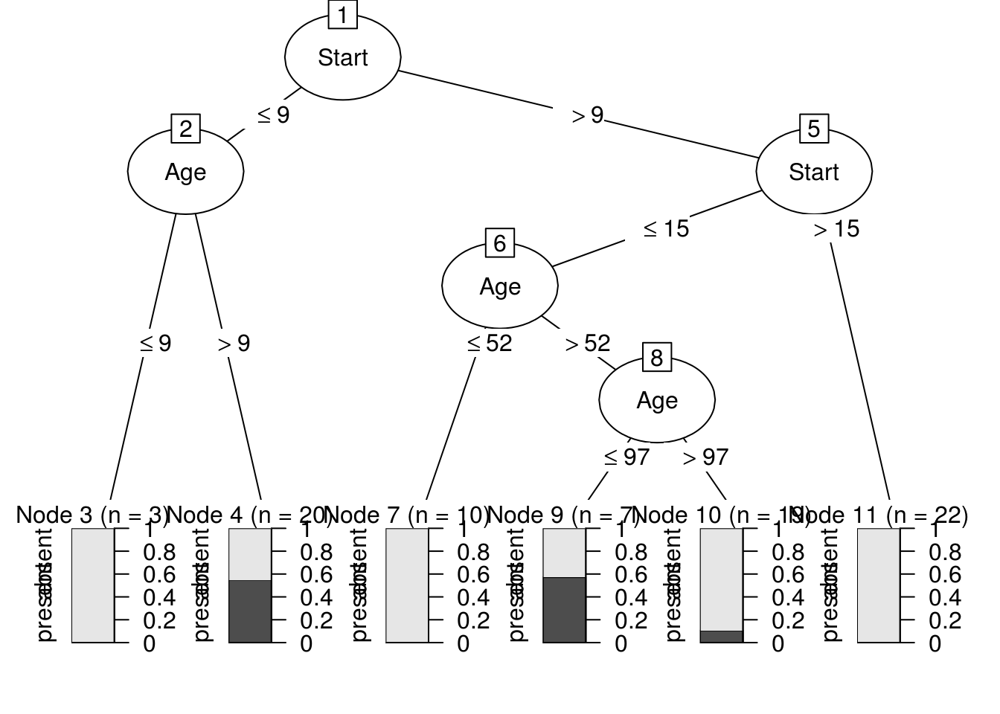
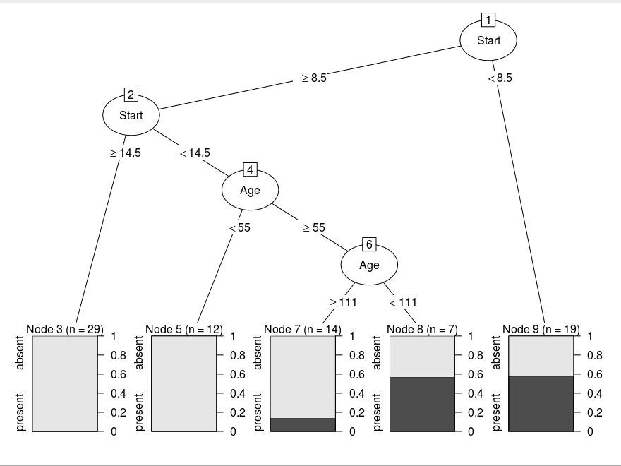
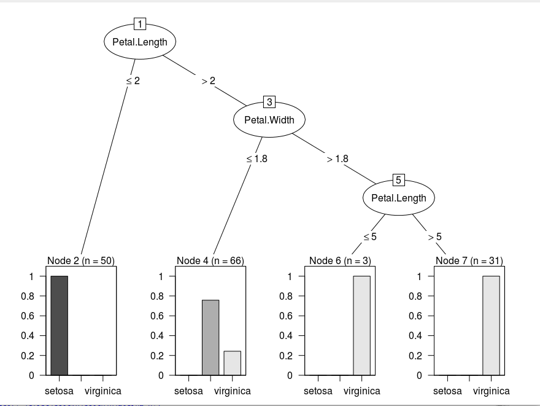
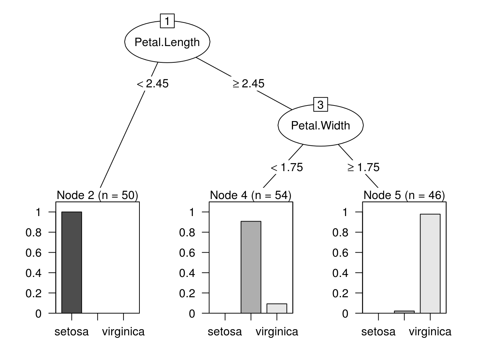

To implement a simple version of Breiman’s CART algorithm using partykit. Currently the algorithm can split only on basis of numerical features and can make only classification trees. The implementation is tested on the rpart example dataset Kyphosis, thereby comparing rpart model to the new implemented one.
## Loading required package: grid## Loading required package: libcoin## Loading required package: mvtnormThe Gini index is the name of the cost function used to evaluate splits in the dataset.The following function calculates the gini-index which is required of finding the best split.
gini_process<-function(classes,splitvar = NULL){
if (is.null(splitvar)){
#if there is no vaiable arguement on which splitting is to be done then
#gini index is the 1 - sum of square of probablity of being in ith class.
base_prob <-table(classes)/length(classes)
return(1-sum(base_prob**2))
}
#splitting variable is a logical variable true if x>splitting point else false.
#if present then calculate probablity of each classes to be true or false.
#done in crossprob
base_prob <-table(splitvar)/length(splitvar)
crosstab <- table(classes,splitvar)
crossprob <- prop.table(crosstab,2)
Gini <- c()
for(i in 1:length(crossprob[1,])){
Node_Gini <- 1-sum(crossprob[,i]**2)
Gini <- c(Gini,Node_Gini)
}
#gini index is base probablity*crossprobablity
return(sum(base_prob * Gini))
}With given dataset anf the target variable, every feature is split at integral points and grouped into TRUE and FALSE where x>split value is stated as TRUE. The Gini index is then calculated using function gini_process. The maximum gini index is the best splitting point. The output is split point’s (row,index).
get_split <- function(dataset,target,i){
b <- c(0,0)
b_score <- Inf
for (index in 1:(length(dataset[0,]))){
#if index is that of target then move to next index
if(names(dataset[index])!=names(dataset[i])){
#check if minimum and maximum exists or if the feature is of class type.
if((max(dataset[,index])==Inf)||(min(dataset[,index])==-Inf)||
(is.factor(dataset[names(dataset[index])]))){
for (row in 1:length(dataset[,1])){ #150
if(is.factor(dataset[names(dataset[index])])){
#class type feature's gini index
spv <- t(dataset[names(dataset[index])])
}
else{
spv <- t(dataset[names(dataset[index])] <
as.numeric(dataset[row,index]))[1,]
}
if(any(spv)){
gini <- gini_process(target, spv)
if (gini < b_score){
b <- c(index,row)
b_score <- gini
}
}
}
b<-c(b[1],dataset[b[2],b[1]])
}
#If max and min of feature exists.
#Let k be integral value from min to max,
#gini index is calculated for each splitting point
#and maximum is noted as best splitting point.
else{
kk<- seq(min(dataset[,index]),max(dataset[,index]),0.2)
for (k in kk){
spv <- t(dataset[names(dataset[index])] < as.numeric(k))[1,]
if(any(spv)){
gini <- gini_process(target, spv)
if (gini < b_score){
b <- c(index,k)
b_score <- gini
}
}
}
}
}
}
if(b_score==0){ return(c(0,0))}
return(b)
}The dataset is split into left and right according to splitting value input.
test_split <- function(dataset, index, value){
left <- c()
right <- c()
for (row in 1:length(dataset[,1])){
if (as.numeric(dataset[row,index]) < value){
left <- cbind(left,row)
}
else{
right <- cbind(right,row)
}
}
group <-c()
group$left <- left
group$right <- right
return (group)
}Using depth first search method, making a binary tree with cost function as maximum gini index. Here I am storing the tree sequence into a variabe b_index which is later used to create the tree using partykit. The tree has a defined maximum depth and minimum horizontal size.
split <- function(group, depth, maxdepth,min_size,target,i,dataset,b_index){
rsize<- length(group$left)
lsize<- length(group$right)
#b_index
l<- length(b_index[,1])
id <- as.numeric(b_index[l,1])+1
term <- 0
varid<-0
kidi<-0
kidf<-0
br<-0
info <- ''
tag<-'no'
# check for a no split
if (!((any(group$left))&&(any(group$right)))){
return(b_index)
}
#gini for right
tag<-'right'
#getting best split for right part of dataset
b <- get_split(dataset[group$right,],target[group$right],i)
#if b value is 0, it means its a terminal.
#There is no further splitting
if((b[1]==0)||(as.numeric(depth)>as.numeric(maxdepth))||
(as.numeric(rsize)<as.numeric(min_size))){
term <- 1
info <- to_terminal(group$right,target)
group$right <- NULL
node <- c(id,varid,br,term,kidi,kidf,info,tag)
b_index <- rbind(b_index,node)
}
#If there is further splitting
else{
varid <- b[1]
br<- b[2]
info <- to_terminal(group$right,target)
node <- c(id,varid,br,term,kidi,kidf,info,tag)
b_index <- rbind(b_index,node)
gr <- test_split(dataset[group$right,], b[1], b[2])
b_index <- split(gr,depth+1,maxdepth,min_size,
target[group$right],i,dataset[group$right,],b_index)
}
#b_index
tag<-'left'
l<- length(b_index[,1])
id <- as.numeric(b_index[l,1])+1
term <- 0
varid<-0
br<-0
info <- ''
#gini for left
b <- get_split(dataset[group$left,],target[group$left],i)
#if no further splitting for left side
if((b[1]==0)||(as.numeric(depth)>as.numeric(maxdepth))||
(as.numeric(lsize)<as.numeric(min_size))){
term <- 1
info <- to_terminal(group$left,target)
group$left <- FALSE
node <- c(id,varid,br,term,kidi,kidf,info,tag)
b_index <- rbind(b_index,node)
}
#for further splitting
else{
varid <- b[1]
br<- b[2]
info <- to_terminal(group$left,target)
node <- c(id,varid,br,term,kidi,kidf,info,tag)
b_index <- rbind(b_index,node)
gr <- test_split(dataset[group$left,], b[1], br)
b_index <- split(gr,depth+1,maxdepth,min_size,
target[group$left],i,dataset[group$left,],b_index)
}
return(b_index)
}Its a table that defines the tree structure. The columns are: “id”, “varid”, “break”, “terminal”, “kidi”, “kidf”, “info”, “tag” respectively. These according to partysplit objects arguements needed. Tag defines whether it went to right or left while splitting.
The kids index required for partysplit are defined here, for every b_index. The logic used is that the i-1th index has kid(right) value as ith one’s id if it has right tag. If the sequence of tag is right then left then i-1th index has kif(left) as id of that “left”. Then fill the remaining ones from last to first.
kid <- function(b_index){
n<- 0
k<-c()
for(i in 2:(length(b_index[,1]))){
if(b_index[i,8]=="right"){
b_index[i-1,6] = i
if(b_index[i+1,8]=="left"){
b_index[i-1,5] = i+1
}
}
if((b_index[i,8]=="left")&&(b_index[i-2,5]==0)){
k<-c(k,i)
}
}
c<-1
for(i in length(b_index[,1]):1){
if((b_index[i,5]==0)&&(b_index[i,4]==0)){
b_index[i,5]=k[c]
c=c+1
}
}
return (b_index)
}The CART algo is implemented here. The nodelist is list of partysplit objects that is then used to create partynode to create the tree structure.
cart <- function(dataset,target,i,maxdepth,min_size){
b_index <- c(1)
n<- c(names(dataset[i]),".")
form <-as.formula(paste(n, collapse="~"))
dataset <- model.frame(form, data = dataset)
#target is changed from ith column to 1st column
i<-1
#get split for the root
b <- get_split(dataset,target,i)
#store the result in b_index
b_index <- data.frame(b_index,b[1],b[2],0,0,0,'',
"root",stringsAsFactors=FALSE)
colnames(b_index) <- c("id","varid","break",
"terminal","kidi","kidf","info","tag")
#split into left-right
group <- test_split(dataset, b[1], b[2])
#split into further groups
b_index <- split(group,1,maxdepth,min_size,target,i,dataset,b_index)
#define the kids
b_index <- kid(b_index)
print(b_index)
#create a list of partysplit objects to be used to create tree structure by partynode.
nodelist <- list(
#root node
list(id = 1L, split = partysplit(varid = as.integer(
b_index[1,2]), breaks = as.numeric(b_index[1,3])),
kids = c(as.integer(b_index[1,5]),as.integer(b_index[1,6]))))
for(i in 2:length(b_index[,1])){
#if terminal
if(as.numeric(b_index[i,4])){
nodelist[i] <- list(list(id = as.integer(b_index[i,1]), info = b_index[i,7]))
}
#if mid-tree structure
else{
nodelist[i] <- list(
list(id = as.integer(b_index[i,1]), split = partysplit(
varid = as.integer(b_index[i,2]),
breaks = as.numeric(b_index[i,3])),
kids = c(as.integer(b_index[i,5]),as.integer(b_index[i,6])),info = b_index[i,7]))
}
}
## convert to a recursive structure
node <- as.partynode(nodelist)
## set up party object
tree <- party(node, data = dataset, fitted = data.frame(
"(fitted)" = fitted_node(node, data = dataset),
"(response)" = model.response(dataset),
check.names = FALSE), terms = terms(dataset))
tree <- as.constparty(tree)
return(tree)
}The data used is kyphosis of rpart package. Hereby plotting the tree generated by CART algo vs the rpart tree.
The dataset Kyphosis
## id varid break terminal kidi kidf info tag
## 1 1 4 8.2 0 9 2 root
## 2 2 4 14.2 0 4 3 absent right
## 3 3 0 0 1 0 0 absent right
## 4 4 2 51.2 0 8 5 absent left
## 5 5 2 96.2 0 7 6 absent right
## 6 6 0 0 1 0 0 absent right
## 7 7 0 0 1 0 0 present left
## 8 8 0 0 1 0 0 absent left
## 9 9 2 8.2 0 11 10 present left
## 10 10 0 0 1 0 0 present right
## 11 11 0 0 1 0 0 absent left

The dataset Iris
## id varid break terminal kidi kidf info tag
## 1 1 4 2 0 11 2 root
## 2 2 5 1.8 0 10 3 versicolor right
## 3 3 4 5 0 5 4 virginica right
## 4 4 0 0 1 0 0 virginica right
## 5 5 0 0 1 0 0 virginica left
## 6 6 4 5 0 6 7 versicolor left
## 7 7 5 1.6 0 9 8 virginica right
## 8 8 0 0 1 0 0 versicolor right
## 9 9 0 0 1 0 0 virginica left
## 10 10 0 0 1 0 0 versicolor left
## 11 11 0 0 1 0 0 setosa left

We can see that the splitting points are almost at same feature and point. The difference which is occuring is because rpart uses rescaled gini methods (which behaves like hybrid of gini and information gain methods) for cost function and we are using only gini index as cost function.